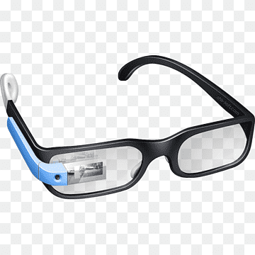

Google Glass
A revolucao do Google esta chegando
Tecnologia > Inovacoes
Saiba tudo sobre o Google Glass
por Gustavo Guanabara
Atualizado em 23/Abril/2013
O que e
O Google Glass é um acessório em forma de óculos que possibilita a interação dos usuários com diversos conteúdos em realidade aumentada. Também chamado de Project Glass, o eletrônico é capaz de tirar fotos a partir de comandos de voz, enviar mensagens instantâneas e realizar vídeoconferências. Seu lançamento está previsto para 2014, e seu preço deve ser de US$ 1,5 mil. Atualmente o Google Glass encontra-se em fase de testes e já possui um vídeo totalmente gravado com o dispositivo. Além disso, a companhia de buscas registrou novas patentes anti-furto e de desbloqueio de tela para o acessório.

GoogleGlass
Uma nova maneira de ver o mundo
Data de lancamento
Nao ha uma data especifica e oficial para o dispositivo ser lancado, ainda. Pode ser que ele esteja disponivel em demonstracoes a partir de 2013, mas seu lancamento para as lojas fica para, pelo menos, 2014.
Especificacoes Tecninas
Tabela Tecnica do Google Glass Mar/2013 Tela:Resolucao equivalente a tela de 25" Camera: 5MP para fotos / 720p para videos Memoria Interna: 12GBComo funciona
De acordo com fontes proximas do Google, os oculos vao contar com uma pequena tela de LCD ou AMOLED na parte superior e em frente aos olhos do usuario. Com o uso de uma camera e GPS, voce pode se situar, assim como selecionar opcoes com o movimento da cabeca.
O que voce pode fazer com o Google Glasses
O video de divulgacao do Google mostra que voce pode se transoformar em uma especie de "super-humano", para que o aparelho pode indicar a quantos metros voce esta de seu destino, se o metro esta aberto ou fechado ou mostrar o clima, agenda e ate mesmo permitir que voce marque encontros apenas com comandos de voz.
AQUI ENTRA UM VIDEOOutras Noticias
Video mais recente
Novidades no Glass
O Google enfim revelou as especificacoes completas do Google Glass, e com ele uma surpresa ainda inedita no mercado: a gigante das buscas usara um sistema de audio baseado na transducao por conducao. Atraves das hastes dos oculos, o som sera transmitido para o ouvido do usuario por meio de microvibracoes em determinados ossos de sua cabeca, sem usar nenhum tipo de alto falante.
Alem da surpresa do audio, a tela montada a frente do olho do usuario tambem chamou atencao. Serao 64 bit, 360 pixels de resolucao que, em proporcao, equivaleria a um monitor de 25 polegadas de alta definicao colocado a 2,5 metros de distancia do espectador.
Copyright 2013 - by Gustavo Guanabara Facebook / Twitter